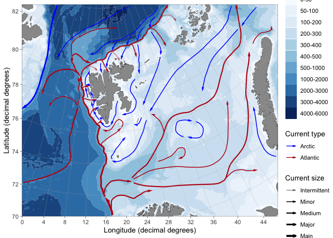

Plot research data from Svalbard on maps. R package version 0.9.1.
NOTE: Development of PlotSvalbard has been ended and moved to a new improved version of the package: ggOceanMaps. Please use that package if you do not need high-resolution Svalbard maps or other functions that are not included in ggOceanMaps. If you wish some functions moved from here to the new package, please send an email to the developer. Support for keeping PlotSvalbard running on new versions of R is still maintained. Please send bug-reports to the maintainer if you encounter difficulties with PlotSvalbard. Bug reports are encouraged to be sent on GitHub. Remember a reproducible example ;)
Overview
This package provides functions to plot research data from Svalbard on detailed and up-to-date maps that are not available in online databases. The package was developed by the Norwegian Polar Institute. Glacier fronts and land shapes of Kongsfjorden originate from July 2017. Note that the package comes with absolutely no warranty and that maps generated by the package might be wrong. Any bug reports and code fixes are warmly welcomed. See Contributions and contact information for further details. PlotSvalbard is based on ggplot2 and the functions can be expanded using ggplot syntax.
Installation
PlotSvalbard is not available in CRAN due to package size limitations. The package can be installed using the devtools package. Recently, there has been many reports with PlotSvalbard installation failing because the install_github function attempts to update installed packages and fails. Try following steps:
- Manually update all R packages you have installed (Packages -> Update -> Select all -> Install updates in R Studio).
- If update of a package fails, try installing that package again using the
install.packagesfunction or the R Studio menu. - Run following:
devtools::install_github("MikkoVihtakari/PlotSvalbard", upgrade = "never")
- If installation of a dependency fails, try installing that package manually and repeat step 2.
Usage
PlotSvalbard extends on ggplot2. Data that contains geographic information can be plotted on these maps using the ggplot2 layers separated by the + operator.
Website and user manual
Detailed documentation on how to use the package can be found from the website including an organized list of functions included in the package and the user manual.
Making a map with text
library(PlotSvalbard) data("kongsfjord_moorings") basemap("kongsfjorden", limits = c(11.3, 12.69, 78.86, 79.1), round.lat = 0.05, round.lon = 0.5) + geom_text(data = kongsfjord_moorings, aes(x = lon.utm, y = lat.utm, label = Mooring.name, color = Name), fontface = 2, size = 25.4/72.27*8) # font size = 8, see Graphical parameters

Barents Sea ocean-current arrows
basemap("barentssea", bathymetry = TRUE, currents = TRUE, current.size = "scaled")

Combining extensions for ggplot2
Most extensions for ggplot2 work together with PlotSvalbard.
data(zooplankton) x <- transform_coord(zooplankton, lon = "Longitude", lat = "Latitude", bind = TRUE) species <- colnames(x)[!colnames(x) %in% c("lon.utm", "lat.utm", "ID", "Longitude", "Latitude", "Total")] library(scatterpie) basemap("barentssea", limits = c(4, 24, 79.5, 83.5), round.lon = 2, round.lat = 1) + geom_scatterpie(aes(x = lon.utm, y = lat.utm, group = ID, r = 100*Total), data = x, cols = species, size = 0.1) + scale_fill_discrete(name = "Species", breaks = species, labels = parse(text = paste0("italic(" , sub("*\\.", "~", species), ")")))
Data sources and citations
If you use the package to make maps for your publications, please cite it. For up-to-date citation information, please use:
citation("PlotSvalbard") #> #> To cite package 'PlotSvalbard' in publications use: #> #> Mikko Vihtakari (2020). PlotSvalbard: PlotSvalbard - Plot research #> data from Svalbard on maps. R package version 0.9.1. #> https://github.com/MikkoVihtakari/PlotSvalbard #> #> A BibTeX entry for LaTeX users is #> #> @Manual{, #> title = {PlotSvalbard: PlotSvalbard - Plot research data from Svalbard on maps}, #> author = {Mikko Vihtakari}, #> year = {2020}, #> note = {R package version 0.9.1}, #> url = {https://github.com/MikkoVihtakari/PlotSvalbard}, #> }
The maps generated by this package should be cited to their original source.
- Svalbard maps originate from the Norwegian Polar Institute. Distributed under the CC BY 4.0 license (terms of use).
- Barents Sea and pan-Arctic land shapes are downloaded from Natural Earth Data. They use the ne_10m_land and ne_50m_land (v 4.0.0) datasets, respectively. Distributed under the CC Public Domain license (terms of use).
- Pan-Arctic bathymetry shapefile is generalized from General Bathymetric Chart of the Oceans One Minute Grid.
- Barents Sea bathymetry shapefile is generalized from IBCAO v3.0 500m RR grid. Should be cited as Jakobsson, M., et al. The International Bathymetric Chart of the Arctic Ocean (IBCAO) Version 3.0. Geophys. Res. Lett. 2012, 39:L12609.
- Svalbard fjord bathymetry shapefiles are from the Norwegian Mapping Authority. Distributed under the CC BY 4.0 license.
The example data included in the package are property of the Norwegian Polar Institute and should not be used in other instances. I.e. these data are unpublished at the moment.
Contributions and contact information
Any contributions to the package are more than welcome. Please contact the package creator Mikko Vihtakari (mikko.vihtakari@hi.no) to discuss your ideas on improving the package.
News
2020-04-09 Updated to v0.9. Many changes and improvements. Taking first steps to prepare for CRAN release under a different name (the package will be renamed ggOceanMaps). Trying to make all functionality stable before the shift. This update may well have broken something.
2019-02-11 Updated to v0.8. PlotSvalbard can now make maps of any region north of 30 degrees latitude. REMOVED arctic50 and arctic60 map types and replaced these by basemap(“panarctic”, limits = 50) (or any integer between 30 and 88). Automatic limits should now work for all map types.
2018-12-18 Updated to v0.7. Added interpolation for oceanographic section plots together with a function that produces such plots using ggplot2. Renamed the previous interpolate function, which performed spatial interpolation to interpolate_spatial. Added possibility to adjust legend positions to basemap. Improved Barents Sea current arrow plotting. The new functions are still relatively unstable and introduce more dependencies. Please report if you do not manage to install the new version of PlotSvalbard. The situation will be improved in the future updates.